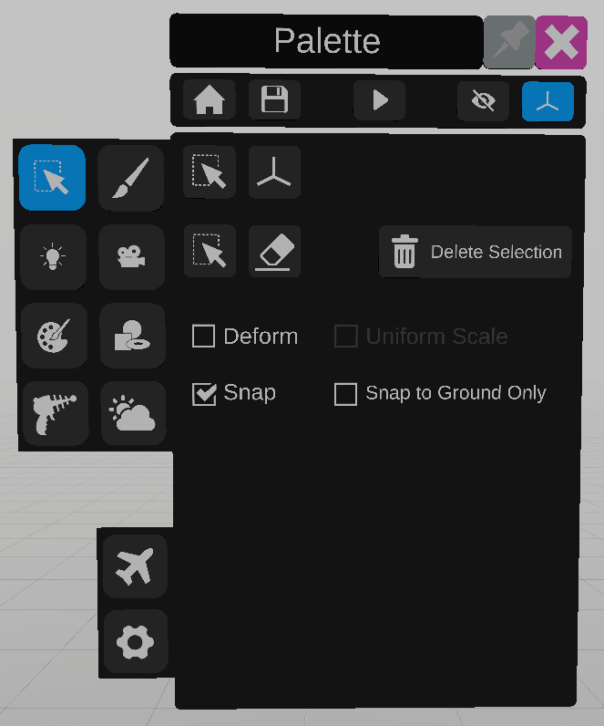
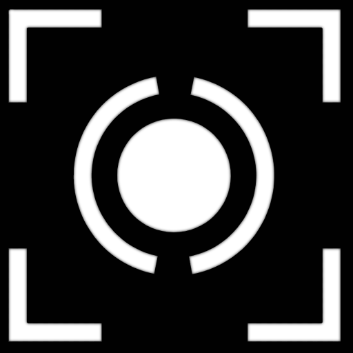

Selection
The selection panel is used to select or unselect objects.
To select an object, move the secondary controller inside an object and press the trigger.
To unselect an item, press the trigger in an empty space.
Select panel
The first sub panel displays information about the selection, and different options.
To use the selection tool, click on the lower  icon. This is the default tool. When the selection tool is active the mouthpiece will be blue.
icon. This is the default tool. When the selection tool is active the mouthpiece will be blue.
icon. This is the default tool. When the selection tool is active the mouthpiece will be blue.To use the deletion tool click the  icon and select an object. When the deletion tool is active the mouthpiece will be red.
icon and select an object. When the deletion tool is active the mouthpiece will be red.
icon and select an object. When the deletion tool is active the mouthpiece will be red.Delete all selected items with the “Delete Selection” button.
To deform an item, after ticking the “Deform the selected items” checkbox, move the secondary controller to one side of the object’s selection box, and press the trigger to drag that side. To deform the object uniformly along all sides, tick the “Uniform scale” checkbox.
Ticking Snap will make the selection box of moved objects stick to the selection box of a close object. The snapping detection can be limited to surfaces facing upwards with the “snap to ground only” checkbox.
Transform panel

The second sub panel displays the transform of the object, and allows edits.
Values can be edited by clicking on the number label.
To reset a position, rotation or scale to its default value, use the  icon on the corresponding parameter. For position and rotation, the default value is 0, for scale the value is 1.
icon on the corresponding parameter. For position and rotation, the default value is 0, for scale the value is 1.
icon on the corresponding parameter. For position and rotation, the default value is 0, for scale the value is 1.To lock a parameter, click on the icon.
To add a parent or a “look at” constraint to an object, click on the  icon in front of the desired constraint, and select the constraining object.
The name of the constraining object will appear next to the constraint.
To remove a constraint, click on the  icon next to it.
icon next to it.
icon next to it.